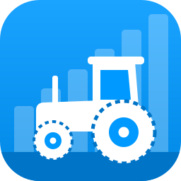
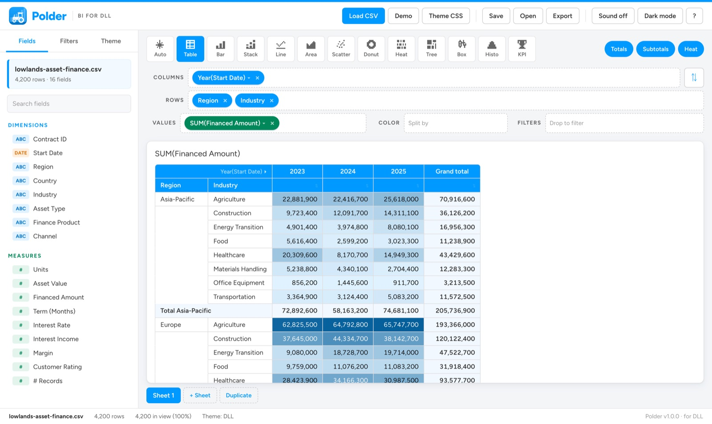
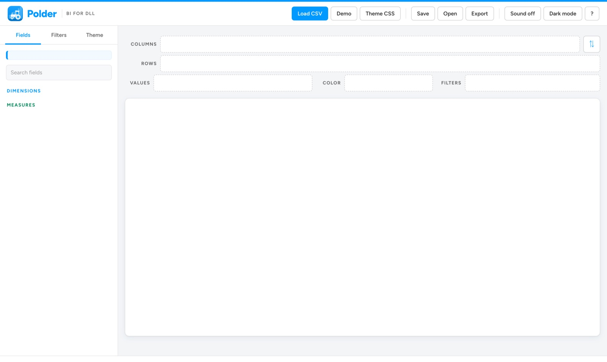
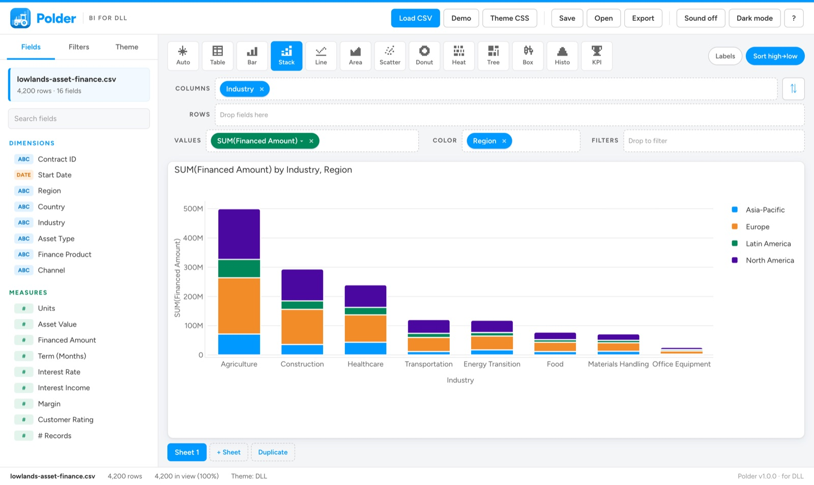
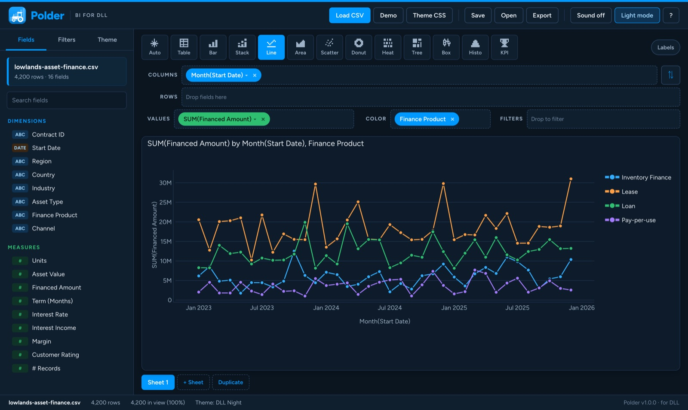
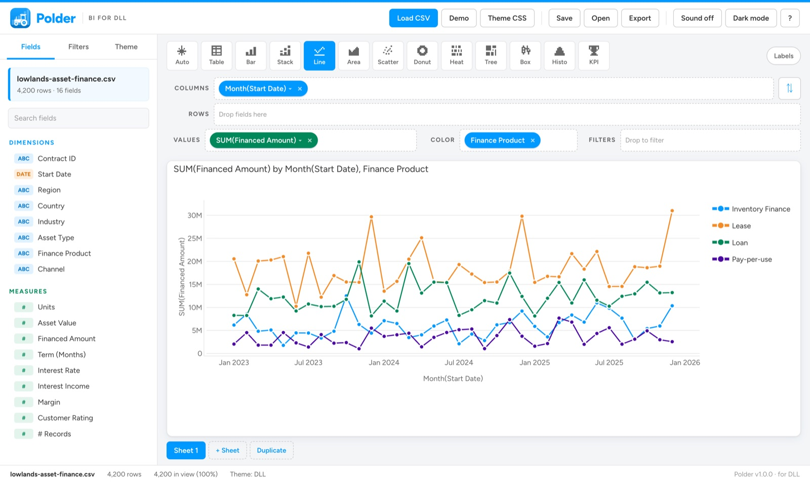
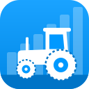

Drag & drop shelves
Pick up a field on the left, drop it on Columns, Rows, Values, Color or Filters. The view redraws as soon as you let go.
Business intelligence for DLL
Polder turns a CSV of contracts, assets or portfolios into charts and pivot tables. Drag, drop, done. It runs on your own computer, so the data stays there.
Works offline · Mac app, or any browser on Windows & Linux · No upload, no account


Features
and nothing you have to configure.
Pick up a field on the left, drop it on Columns, Rows, Values, Color or Filters. The view redraws as soon as you let go.
Several levels of rows and columns, subtotals, grand totals, heat shading and click-to-sort. Drag pills between shelves or hit ⇅ to swap rows and columns.
Bar, stacked, line, area, scatter, donut, heatmap, treemap, box plot, histogram and KPI tiles. Auto picks a sensible one. Export any view as PNG, SVG or CSV.
Searchable checklists for categories, from/to ranges for numbers and dates. The status bar shows how many rows are still in view.
The DLL theme is built in, with a dark twin, DLL Night. Need another look for a partner or vendor? Load a .css file with their colours and fonts.
Commas, semicolons, tabs or pipes. Decimal commas, thousands separators, European and US dates, and Excel's Windows encoding are all detected.
Keep several sheets side by side. Polder remembers your layout for each file and can save it, with filters and theme, to a small .polder.json workbook.
Polder runs entirely in your browser or Mac app. No server, no account, no upload. Your CSV never leaves your computer.
How it works
Click Load CSV or drop a file anywhere on the window. Polder sorts the columns into Dimensions (text, dates, IDs) and Measures (numbers).

Industry to Columns, Financed Amount to Values, Region to Color, and you have a stacked bar chart. Click a pill to switch Sum to Average, or Year to Month.

Choose Table for a pivot table, stack dimensions on rows and columns, turn on heat shading, and drop fields on Filters to zoom in. Export the result for your deck.
Themes
The interface follows DLL's look. Charts and tables follow a theme, which is a CSS file: DLL, DLL Night, or your own.

/* every line is optional */
@import url("https://fonts.googleapis.com/css2?family=Inter");
:root {
--polder-font-family: "Inter", sans-serif;
--polder-font-size: 13px;
--polder-text-color: #333333;
--polder-background: #ffffff;
--polder-grid-color: #e5e5e5;
--polder-palette: #0099ff, #f28c28, #00875a, #4b08a1;
--polder-sequential: #e0f2ff, #005c99;
--polder-table-header-background: #0099ff;
--polder-table-header-color: #ffffff;
}.css file on the window.--polder-* variables, plus plain font-family, color and background on :root or body.@import or @font-face. If DLL's Effra font is installed, Polder uses it.Examples: dll.css · dll-night.css · corporate.css · arcade.css · editorial-webfont.css
Gallery
All screenshots use the fictional Lowlands Asset Finance dataset that ships with Polder: 4,200 made-up contracts across agriculture, construction, healthcare, energy transition and more.

Download
Version 1.0.0. The native Mac app, or a zip that runs in any browser on Windows, Linux or Mac.

macOS 13 Ventura or later · Apple silicon & Intel
Download .dmgPolder isn't notarized by Apple yet, so macOS asks you to confirm once. Click Done, open System Settings › Privacy & Security, scroll down and click Open Anyway next to Polder. You won't be asked again.
Windows, Linux or Mac · Chrome, Edge, Firefox or Safari 16.4+
Download .zipindex.html in the Polder folder. It opens in your browser, no install needed.Both versions run entirely on your computer. No internet connection, no account, and your data never leaves your machine.
The app, a fictional 4,200-contract demo portfolio (samples/), example theme files (themes/), and offline copies of plotly.js and the Figtree font.
Demo CSV · Use it in the browser (your files stay on your computer there too).
DLL stands for De Lage Landen, "the Low Countries". A polder is the Dutch answer to the sea: low land, diked and drained, turned into fields that feed a country. Polder does the same for data. It reclaims insight from a sea of rows. The icon shows a tractor (equipment finance, where DLL started) crossing a field that rises like a bar chart (growth).